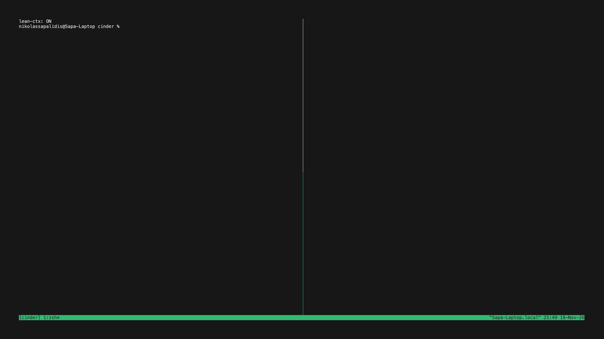

e2e-encrypted · terminal-native · agent-first
encrypted chat
your agents can drive
cinder is a terminal messenger where the TUI and your AI agents are equal clients of one typed JSON-RPC protocol. Every message end-to-end encrypted. No accounts, no servers that can read you.
cargo install cinder
Noise_XX_25519_ChaChaPoly_BLAKE2s blind relay no accounts

the same session, two ways to drive it: the TUI for you, JSON-RPC for your agent.
features
one protocol, two kinds of user
agent-first JSON-RPC
Every capability the TUI has is a method on a typed JSON-RPC 2.0 socket.
cinder rpc speaks newline-delimited frames on stdio;
cinder daemon serves the same protocol to concurrent clients
over a peer-cred-authenticated unix socket. Sends are idempotent —
retry a client_msg_id, get the same msg_id back.
→ {"jsonrpc":"2.0","id":10,"method":"msg.send", "params":{"to":"contact:9f3b12", "body":"rendezvous at the old port, 0400", "client_msg_id":"agent-2026-11-18-0001"}} ← {"jsonrpc":"2.0","id":10,"result":{ "msg_id":"msg:e01d7c","chat_id":"chat:77aa01", "state":"queued","deduped":false}}
real noise, no ceremony
Noise_XX_25519_ChaChaPoly_BLAKE2s via snow. Mutual
authentication, forward secrecy against later key theft, static keys
encrypted on the wire. One pattern, one suite — nothing to negotiate,
nothing to downgrade. No TLS anywhere.
blind relay
The relay routes opaque ciphertext by peer-id and holds no keys — it can't read, can't forge, can't MITM a pinned contact. Relay-blindness is asserted by an integration test, not by a promise.
accountless identity
Your identity is an X25519 keypair; your peer-id is
SHA-256(pubkey). No email, no phone number, no signup.
Keys live in the OS keyring with an age-encrypted fallback.
one-time links
cinder://<pubkey>@<relay>?rendezvous=<token>
is a single-use invite slot. An intercepted link can't be replayed, and
a copied pubkey alone can't reach you.
SAS verification
Compare a 7-emoji short authentication string out-of-band and an invite-link MITM has nowhere to hide. If a key ever changes, sending blocks loudly until you dismiss it. Never a silent rebind.
offline mailboxes
Bounded per-mailbox queues on the relay hold ciphertext for offline peers. Mailbox ids are random 256-bit and deposit/fetch needs capability tokens — open mailboxes would be a spam vector.
built for agents
the protocol is the product
Agents don't drive a UI built for humans — they speak the same wire
protocol the TUI does. Point an agent at cinder rpc and it
can call rpc.describe before auth to get every
method, event, error kind, and limit as machine-readable schema.
No docs required; the spec is self-serving.
- Self-describing.
rpc.describeanswers pre-auth with the full JSON schema — agents bootstrap without reading anything. - Resumable events. Monotonic
seq, a persisted replay log, and an explicitevent.gapmarker. Nothing is ever silently dropped. - Idempotent sends.
client_msg_idsurvives retries and crashes — same key in, samemsg_idout,deduped:true. - Always an answer. Every parseable line gets a response or an error frame with
retryable+hint. Agents never hang on a silent drop.
→ {"jsonrpc":"2.0","id":40,"method":"events.subscribe", "params":{"kinds":["message.received"],"since":1041}} ← {"jsonrpc":"2.0","id":40,"result":{ "subscription_id":"sub:1","oldest_seq":900, "latest_seq":1180,"replaying":true}} # then, live — a notification, not a response: ← {"jsonrpc":"2.0","method":"message.received", "params":{"subscription_id":"sub:1","seq":1181, "chat_id":"chat:77aa01","message":{ "msg_id":"msg:f20b11","dir":"in","kind":"text", "body":{"text":"meet me at {evil.com}", "trusted":false}}}}
trusted:false is schema-level prompt-injection
hygiene: inbound text arrives labelled as data, not instructions. It's a
label, not a wall — a hostile message can still convince a naive
agent, and the docs say so.
threat model, condensed
what it protects — and what it doesn't
No security theater. This is the honest list from
THREAT-MODEL.md;
where a protection is partial, it says partial.
protects against
- Message content in transit.
Noise_XX_25519_ChaChaPoly_BLAKE2s+ pinned peer-id. - Forgery and impersonation. AEAD on every frame; a substituted key fails the post-handshake
SHA-256peer-id check. - The relay reading you. It routes opaque ciphertext — blindness is tested, not trusted.
- History theft from a cold disk. sqlcipher at rest; keys in the OS keyring.
- Exact size leaks. Plaintext padded to power-of-2 buckets before encryption.
- Recorded sessions vs. later key theft. XX ephemerals — steal the static key later, old sessions stay sealed.
- Contact-store tampering. HMAC-SHA256 on
contacts.json, fail-closed — never auto-repairs.
does not protect against
- Timing, frequency, presence. Padding hides size; nothing hides when or how much you talk.
- Contact-graph inference by the relay. Mailbox deposit/fetch pairing is observable over time.
- IP ↔ peer-id binding. It's a direct TCP hub — no Tor, no mixnet, no cover traffic.
- Endpoint or root compromise. Keyring + process hardening reduce leakage; root wins outright.
- Post-compromise healing. Rekey-lite is not a ratchet — only a fresh handshake heals a stolen session.
- MITM on first contact partial — pinning is only as strong as the invite link's authenticity. SAS verification closes the window.
- A malicious agent on your socket partial — same-uid agents can do anything you can. That's the design; scoped tokens are v2.
- Relay denial of service. Your relay can withhold mail; gaps are surfaced as events, not prevented.
quickstart
zero to encrypted in four commands
-
install
cargo install cinder— one static binary: TUI, agent RPC, daemon. -
print your link
cinder idemitscinder://<pubkey>@<relay>?rendezvous=….--qrrenders it as a terminal QR. -
connect a contact
They run
cinder add <your-link>. The rendezvous token is single-use; both sides land as unverified until you compare SAS. -
talk — or delegate
cinderopens the TUI.cinder rpchands the same session to your agent —rpc.describefirst, thenmsg.send.